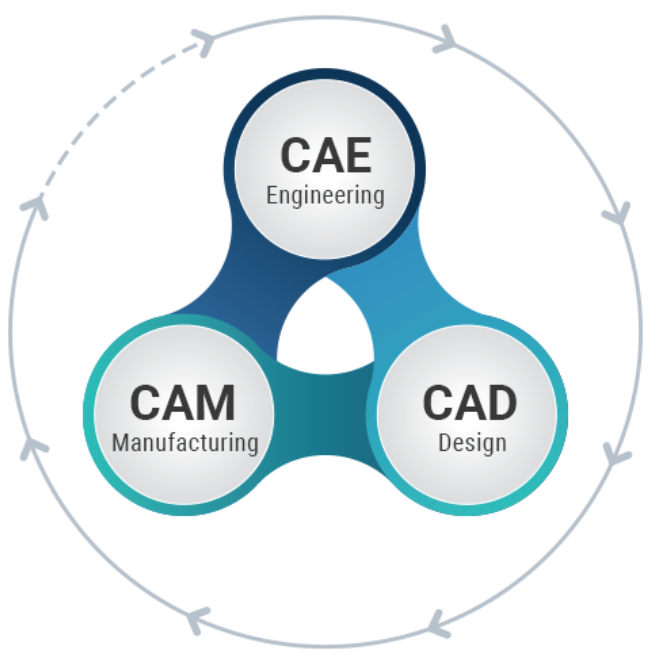
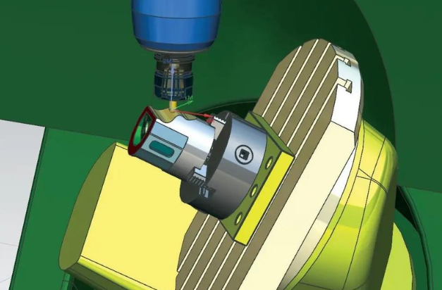

Los principios del CAD (Diseño Asistido por Computadora) y del CAM (Fabricación Asistida por Computadora) son esenciales en los campos de la ingeniería y la fabricación modernas.
SESIÓN 13 (30-04-2024)

El CAD (Diseño Asistido por Computadora) es un proceso crucial en el campo de la ingeniería y la
manufactura, utilizando software especializado para crear y modificar diseños tridimensionales
con precisión digital. Esto permite a los profesionales diseñar y analizar productos antes de su
producción física. Desde programas básicos hasta herramientas avanzadas con simulación de
comportamiento, el CAD ofrece una gama de opciones para agilizar el proceso de diseño. Su
integración con el CAM (Fabricación Asistida por Computadora) es vital para garantizar una
transición fluida desde el diseño hasta la producción, mejorando la precisión y reduciendo los
costos en la industria.
SESIÓN 14 (01-05-2024)

Hoy en día, contamos con software estándar de propósito general, como AutoCAD o Microstation,
que son bastante potentes y facilitan el diseño asistido por ordenador tanto en dos como en tres
dimensiones. Sin embargo, aunque son fáciles de usar en 2D, su utilidad en 3D podría mejorar en
términos de usabilidad. Además, para maximizar su productividad en campos específicos como la
construcción o el diseño mecánico, suelen requerir módulos adicionales. Estas aplicaciones
suelen ser abiertas y ofrecen la posibilidad de integrar diversos módulos complementarios
desarrollados por diferentes empresas, lo que amplía sus capacidades y adaptabilidad a distintos
sectores de aplicación.